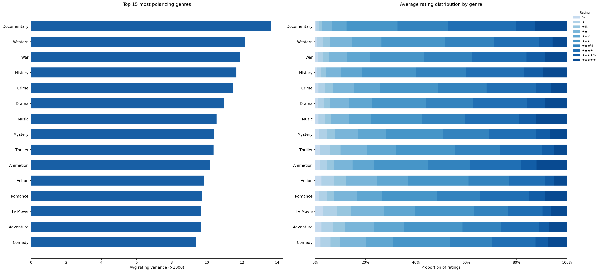
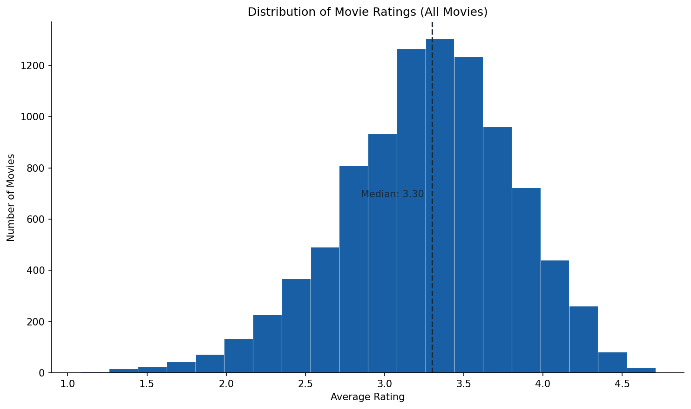

Why do audiences choose what they watch?
As streaming overtakes the theater experience and ticket prices climb, studios face a data-rich opportunity to understand what drives viewership and ratings. Using Letterboxd — the social platform where film enthusiasts log, rate, and discover movies — we analyze 10,003 films to surface patterns that explain audience behavior.
Our analysis draws on a Kaggle dataset (10,000 Movies + Letterboxd Data) containing 29 columns of metadata: director, cast, genre, description, average rating, list appearances, and more.
To recover from a significant decline in theater viewership, studios can turn to data to discover what makes a movie popular.
Four lenses on film audience behavior
List curation & language
Does list curation differ between English and non-English cinema? We hypothesize that non-English films require "list endorsement" to get watched, while English films attract casual viewers.
What drives viewership?
Analyzing the impact of film characteristics on audience reach — from runtime and genre to director reputation and language.
Genre rating polarization
Do certain genres show higher rating polarization? Horror is the classic example — viewers either love it or hate it. We compute variance across the full 10-point star distribution.
Likable vs. highly rated
Are some genres more "likable" than "highly rated"? A film can rack up likes while sitting at a middling average — a meaningful distinction for marketing.
The findings
All visuals include clear titles and axis labels, and legends are included where color grouping is needed.
Genre rating polarization & distribution
Shows how strongly audiences disagree across genres using rating variance and full star distributions. Use it to identify which genres are most polarizing versus most consensus-driven.

Takeaway: This chart shows that polarization is not random, it is concentrated in specific genres such as Documentary, Western, War, and History. For studio decision-making, that means these genres carry higher upside and higher downside: they can create passionate audiences, but they can also miss broad viewers if positioning is unclear. The stacked distributions show most genres still center around mid-to-high ratings, so success is often determined by how much of the audience you can pull into the upper-rating tail. A practical box office strategy is to treat high-polarization genres as precision products, using targeted trailers, audience-specific ad buys, and release timing matched to known fan communities. In contrast, lower-polarization genres are better candidates for wide-release campaigns built around broad messaging and larger opening-weekend reach.
Rating vs. review volume — quadrant analysis
Shows the relationship between audience rating and review volume for the 150 most-reviewed films. Use hover to inspect the exact film-level values within each quadrant.
Takeaway: The quadrant split demonstrates that rating quality and audience volume are connected but clearly distinct outcomes. "Acclaimed blockbusters" indicate the best-case formula where creative quality and marketing scale reinforce each other, while "commercial triumphs" show how distribution and promotion can still deliver large audiences even with moderate ratings. "Cult classics" highlight titles with strong quality signals that may be under-monetized in theatrical release and could benefit from revised distribution windows, better platform placement, or regional relaunch strategies. For executives, this view is especially useful as a portfolio tool: rather than trying to make every movie a four-quadrant tentpole, teams can intentionally choose which business model each title is expected to fit before release. That creates clearer greenlight criteria, more realistic revenue forecasts, and better alignment between budget size and expected audience behavior.
Distribution of average ratings
Shows the overall distribution of average ratings across all films, with the median marked as a reference. Use it to see where most films cluster and how frequent rating extremes are.

Takeaway: The histogram indicates the market baseline: most films land in a narrow middle band around 3.0 to 3.5 ratings. From a box office perspective, this means "average" quality is common and rarely enough on its own to drive standout theatrical performance. To outperform, a film typically needs either stronger quality momentum (moving right in the distribution) or stronger reach mechanisms such as franchise familiarity, star power, or superior campaign execution. The relative scarcity of extreme low and extreme high ratings also suggests that incremental gains matter, since moving from "good" to "very good" can materially improve word-of-mouth and repeat viewing. Teams can use this distribution as a benchmark to set realistic pre-release targets for test screenings and post-launch audience sentiment.
Distribution of movie ratings (D3 view)
Shows the same rating distribution using a D3 implementation, including bin structure, axes, and median marker. Use it to validate patterns seen in the static histogram and compare how presentation affects interpretation.
Takeaway: Embedding the D3 view confirms the central pattern that most films cluster in the middle of the rating range, with relatively few extreme outcomes. The median marker reinforces where audience sentiment is concentrated, which is useful for setting realistic quality targets before release. For box office strategy, this means teams should not rely on "average" reception alone, but instead combine baseline quality with stronger positioning, timing, and campaign execution to move titles into higher-performing outcomes.
Average rating vs. watch count by language
Shows how language compares across watch volume and average rating for the top 20 groups. Use the side-by-side panels to compare the full view with and without the English outlier.
Takeaway: This view shows a consistent tradeoff between scale and average reception across language markets. English-language films dominate total watch volume, which reflects distribution advantage and larger existing demand funnels, but several non-English clusters show equal or stronger rating quality. For growth strategy, that gap represents opportunity: high-rated non-English content can expand total box office when supported with localized marketing, subtitling and dubbing quality, and stronger theater placement. The two-panel structure is important because it prevents the English outlier from hiding meaningful differences among non-English segments. In practice, this chart supports region-specific acquisition and release planning rather than a one-size-fits-all global model.
Top 10 rated films by language & genre
Shows the top 10 highest-rated films for the selected language and genre combination. Use the dropdown filters to quickly switch contexts and compare ranked results.
Takeaway: The ranked filter view makes one core business point clear: "best movie" is conditional on audience context, especially language and genre preference. A title that performs exceptionally in one segment may not transfer directly to another, so benchmarking should be done within comparable audience slices. This is valuable for box office planning because campaign creatives, influencer partnerships, and media channels can be tailored to the specific audience profile where a title has the highest probability of conversion. It also improves slate strategy by revealing which combinations of language and genre repeatedly produce high-rated outcomes. Over time, this type of segmented ranking can guide project development toward combinations with stronger evidence of demand and satisfaction.
What we learned and what to do next
Conclusion 1: Popularity is not quality
The visuals show that attention and audience satisfaction are separate performance dimensions. Successful box office planning should therefore use dual targets: one for reach (awareness, opening weekend demand) and one for quality momentum (ratings, word-of-mouth durability). Titles that score well on both should receive aggressive theatrical support, while titles with split signals should receive a strategy tuned to their specific quadrant.
Conclusion 2: Polarization is genre-specific
Genre-level variance patterns indicate that some categories are structurally riskier but can produce high-engagement upside when marketed precisely. Studios should treat these films as targeted investments, using narrower but more relevant campaigns, and balance them with consensus-friendly titles that stabilize total revenue. This mix improves expected portfolio return while reducing dependence on any single release profile.
Conclusion 3: Language patterns reveal market opportunities
Language comparisons suggest that broad reach still favors English releases, but quality signals are strong across multiple non-English markets. The growth path is not only producing more content, but improving cross-market discoverability through localization, scheduling, and recommendation placement. Future work should add time-series and release-window analysis to quantify when high-rated non-English films can most effectively convert into box office growth.
Sourced from Kaggle — 10,000 Movies + Letterboxd Data. 10,003 unique films, 29 columns including director, cast, genre, description, average rating, list appearances, and more.